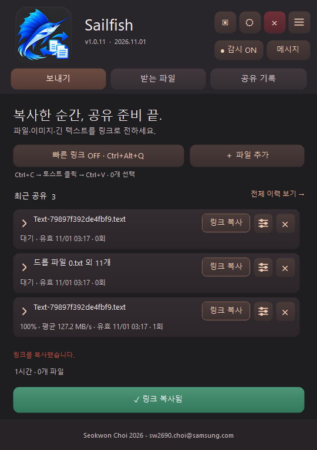
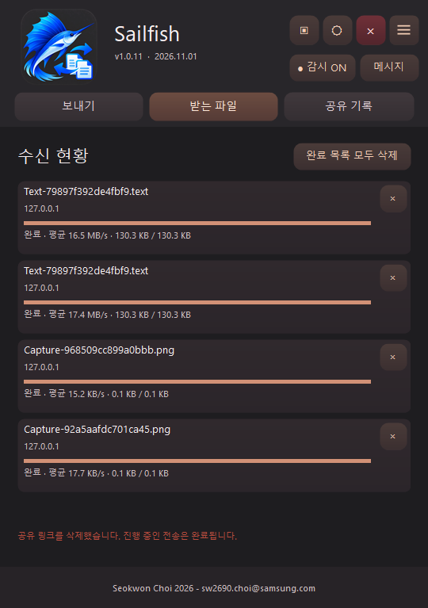
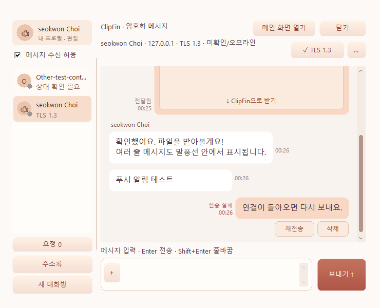
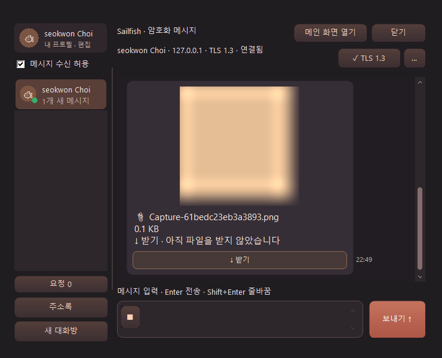
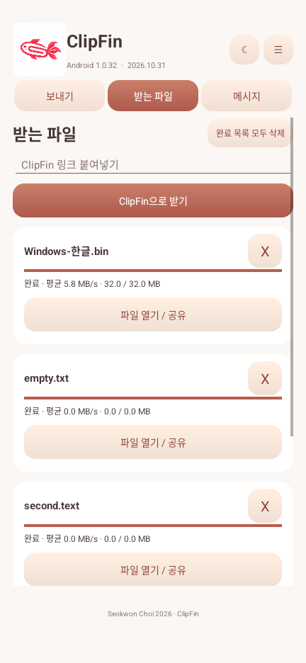
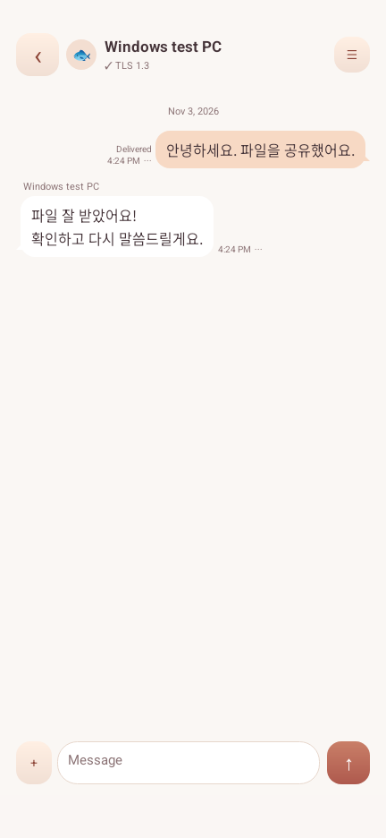

ClipFin 사용 매뉴얼
Windows 1.0.36 · Android 1.0.36 기준 | 2026년 11월
Windows 1.0.37의 유선·무선/IP 변경 자동 복구 및 연결 정보 / 주소 다시 찾기는 추가 사용 안내를 참고하세요. 아래 화면과 PDF는 1.0.36 기준입니다.
Windows 1.0.42부터 보낸 메시지의 전달됨 옆에 아직 읽지 않은 수신자 수를 표시합니다. 1:1은 1, 그룹은 발신자를 제외한 발송 당시 수신자 수에서 시작해 읽은 사람마다 차감하며, 모두 읽으면 숫자를 숨깁니다. 해당 대화창을 화면 앞에서 열 때 읽음으로 처리합니다. 양쪽 Windows 1.0.42 이상이 필요하며 Android 1.0.36은 읽음 확인을 보내지 않습니다. 이전 기록의 알 수 없는 읽음 인원은 추정하지 않습니다.
Windows 1.0.43에서는 메시지 작성 중 자동 화면 갱신을 보내기/입력 지우기까지 미루고 한글 IME 처리를 보완했습니다. 실제 사용자 IME에서 보고된 입력 오류의 해소는 아직 확인하지 못했습니다. 웹 이미지 미리보기는 원본 크기 그대로 표시하며 큰 이미지는 스크롤로 봅니다.
ClipFin은 파일, 이미지와 긴 글을 링크로 공유하고 기기끼리 메시지를 주고받는 프로그램입니다. 처음 사용한다면 시작하기 → 첫 파일 보내기 → 받기 순서로 따라 해 보세요.
화면은 테스트 환경의 예시입니다. 메시지 화면은 Windows 1.0.36 수정 빌드 기준이며, 일부 공유·Android 화면은 이전 버전에서 촬영하여 세부 버튼이 다를 수 있습니다. 설명은 위의 배포 버전을 기준으로 합니다.
1. 시작하기 전에
- Windows는 Windows 11 x64를 기본으로 하며, Windows 10 x64도 지원합니다. Android는 Android 10 이상에서 사용할 수 있습니다.
- 보내는 기기와 받는 기기가 서로 접근할 수 있는 사내 네트워크나 VPN에 연결되어야 합니다. 같은 Wi-Fi에 있어도 기기 간 연결을 차단하는 네트워크에서는 동작하지 않을 수 있습니다.
- 파일은 클라우드에 보관되는 방식이 아닙니다. 받기가 끝날 때까지 보내는 기기의 ClipFin과 네트워크 연결을 유지하세요.
- 공유 링크를 아는 접근 가능한 사람은 파일을 받을 수 있습니다. 링크를 공개 게시하거나 불필요하게 전달하지 마세요. 파일 전송은 HTTP이며 메시지의 암호화 연결과 다릅니다.
설치와 처음 실행
Windows: 제품 페이지의 다운로드에서 Windows ZIP을 받고 압축을 푼 뒤 ClipFin.exe를 실행합니다. 처음 실행할 때 초기 설정과 방화벽 허용을 요청할 수 있습니다. 승인하지 않거나 조직 정책이 차단하면 공유 서버가 시작되지 않을 수 있습니다. 전체 메뉴의 초기 설정 다시 실행으로 재시도할 수 있습니다. 바탕화면 바로가기 생성 여부도 선택할 수 있습니다.
Android: Android 릴리스 APK를 내려받아 설치하고 ClipFin을 엽니다. Android 설치 화면에서 필요한 설치 허용을 진행하세요. 앱에서 요청하는 알림과 로컬 네트워크 관련 권한은 안내에 따라 허용합니다. PC와 서로 접근 가능한 Wi-Fi 또는 VPN에 연결합니다.
2. 한눈에 보는 공유 흐름
보내는 사람 받는 사람
파일·이미지·글 선택 링크 열기
↓ ↓
공유 링크 만들기 ── 메신저로 전달 ──→ 브라우저 또는 ClipFin으로 받기
↓ ↓
앱과 네트워크 유지 수신 완료 확인
공유 링크는 파일이 들어 있는 인터넷 주소처럼 보이지만, 실제로는 보내는 기기에 직접 연결하는 주소입니다. 클립보드는 복사한 내용을 잠시 보관하는 공간이고, 토스트는 화면에 잠깐 나타나는 알림입니다.
3. Windows 화면과 첫 공유

위 화면에서 상단의 보내기 / 받는 파일 / 공유 기록 탭으로 이동합니다. 감시 ON은 새로 복사한 공유 가능한 내용을 살펴보는 상태입니다. ☰는 전체 메뉴, 각 공유 항목 오른쪽의 조절 모양 버튼은 해당 링크의 설정입니다. 화면의 파일명과 횟수는 테스트 예시입니다.
파일을 복사해서 보내기
- 보내는 PC에서 ClipFin을 실행하고 감시가 ON인지 확인합니다.
- 탐색기에서 파일 하나 또는 여러 개를 선택하고 Ctrl+C를 누릅니다.
- 나타나는 ClipFin 알림을 클릭합니다. 공유 링크가 클립보드에 복사됩니다.
- 메신저의 입력창에서 Ctrl+V로 붙여넣고 상대에게 보냅니다.
- 상대가 다운로드를 완료할 때까지 ClipFin을 켜 둡니다.
이미지나 긴 텍스트도 복사한 뒤 같은 방법으로 보낼 수 있습니다. 알림 클릭 전에 다른 내용을 복사하면 최신 복사 내용이 대상이 됩니다. 이미 만들어진 링크는 따로 유지됩니다. 앱이 시작되기 전에 복사한 내용은 자동 공유되지 않습니다.
파일 추가와 끌어놓기
보내기 → 파일 추가를 눌러 파일을 고르거나 탐색기에서 파일을 ClipFin 창으로 끌어놓습니다. 여러 파일을 하나의 링크로 묶을 수 있습니다. 화면의 링크 만들기/복사 동작을 실행하거나 생성된 항목의 링크 복사를 누른 다음 메신저에 붙여넣습니다.
감시와 빠른 링크
- 감시 ON/OFF: 상단 감시 버튼, 트레이 메뉴 또는 Ctrl+Alt+S로 전환합니다. 프로그램을 다시 시작하면 감시는 ON으로 시작합니다. 감시 상태 알림을 숨겨도 감시는 계속됩니다.
- 빠른 링크: 보내기 화면에서 켠 뒤 다른 앱에서 파일이나 텍스트를 선택하고 Ctrl+Alt+Q를 누릅니다. ClipFin가 복사를 요청하고 새 클립보드 내용을 기다려 링크를 만듭니다. 기본값은 OFF입니다. 단축키 충돌, 관리자 권한 앱 또는 터미널에서는 동작이 제한될 수 있습니다.
- 트레이는 작업 표시줄 오른쪽의 아이콘 영역입니다. 창 제목 표시줄의 X는 창을 트레이로 숨길 수 있습니다. 프로그램 내부의 종료 버튼이나 트레이 종료 메뉴로 실제 종료합니다.
화면 캡처
상단 캡처 메뉴 또는 트레이에서 다음 동작을 선택합니다. 영역은 마우스로 드래그하고 창은 대상 창을 선택합니다. Esc로 취소할 수 있습니다. 창 캡처는 화면에서 가려진 부분을 복원하지 않습니다.
| 메뉴 | 단축키를 켰을 때 | 완료 후 동작 |
|---|---|---|
| 영역 캡처 → 클립보드 | Ctrl+Alt+1 | 이미지 자체를 복사합니다. 메시지 입력창에 Ctrl+V로 붙여넣고 미리보기의 보내기를 누릅니다. |
| 영역 캡처 → 링크 | Ctrl+Alt+2 | 이미지 공유 링크를 복사합니다. |
| 전체 화면 캡처 | Ctrl+Alt+3 | 전체 모니터를 캡처하고 공유 링크를 복사합니다. |
| 창 선택 캡처 | Ctrl+Alt+4 | 선택한 창을 캡처하고 공유 링크를 복사합니다. |
캡처 단축키 사용을 켜면 위 단축키를 사용할 수 있습니다. 단축키 충돌 시 다른 프로그램의 설정을 확인하세요. 메뉴는 단축키 설정과 관계없이 사용할 수 있으며, 캡처는 클립보드 감시가 꺼져 있어도 작동합니다.
4. 공유 관리와 받기
유효기간과 횟수
보내기 또는 공유 기록의 항목에서 공유 설정을 열어 유효기간을 지금부터 1시간, 4시간 또는 24시간으로 변경할 수 있습니다. 다운로드 횟수는 파일당 1회, 3회 또는 제한 없음으로 설정할 수 있습니다. 그룹 설정은 그룹의 파일들에 적용하고 개별 파일 메뉴는 해당 파일에 적용합니다. 설정을 바꿔도 이미 사용한 횟수는 초기화되지 않습니다.
항목을 펼치면 파일별 진행 상황과 수신 기기 정보를 확인할 수 있습니다. 표시된 기기 이름과 IP는 인증된 사용자 신원과 같지 않습니다. 링크의 X를 누르면 새로운 다운로드가 차단되지만 이미 시작된 전송은 완료될 수 있습니다. 선택 삭제나 전체 삭제도 사용할 수 있습니다.
브라우저에서 받기
- 전달받은 링크를 브라우저에서 엽니다.
- 파일 이름 옆 다운로드를 누르거나, 여러 파일이면 전체 ZIP 받기를 선택합니다.
- 이미지와 텍스트는 제공되는 미리보기로 내용을 확인할 수 있습니다. 텍스트는 복사하거나 파일로 받을 수 있습니다.
링크가 열리지 않으면 보내는 앱이 켜져 있는지, 네트워크가 연결되는지, 유효기간과 횟수가 남았는지 확인하세요. 브라우저에서만 받으면 메시지용 상대가 자동 등록되지 않습니다.
ClipFin으로 받기
양쪽 기기에서 ClipFin을 실행한 뒤 공유 페이지의 ClipFin으로 받기를 이용하거나, 앱의 받는 화면에 링크를 입력합니다. 여러 파일은 각각 진행 상태가 표시됩니다. 수신을 중지한 뒤 같은 유효한 링크로 다시 받으면 저장된 진행 상태를 이용해 이어받을 수 있습니다. 링크가 만료되거나 삭제되었거나 횟수 제한에 도달한 경우에는 새 링크가 필요할 수 있습니다.

Windows에서는 받는 파일 화면에서 현재 수신 묶음을 중지할 수 있습니다. 완료 항목의 X 또는 완료 목록 정리는 목록 표시만 삭제하며 받은 파일을 지우지 않습니다. 기본 저장 위치는 전체 메뉴의 받는 경로에서 변경할 수 있습니다.
5. 메시지 사용하기
상대 등록과 확인
- 파일 공유로 등록하려면 두 기기에서 ClipFin을 실행하고 한쪽의 링크를 다른 쪽에서 ClipFin으로 받기로 수신합니다. 브라우저로만 받으면 메시지 상대가 자동 등록되지 않습니다.
- Windows에서는 메시지 → 주소록 → 새 항목에 상대 이름과 IPv4를 저장해 등록 요청을 보낼 수도 있습니다. 상대가 이름·IP·인증서를 확인하고 수락하면 TLS 등록을 완료합니다.
- 요청은 메시지 창 왼쪽 아래 요청 또는 더보기의 등록·그룹 초대 요청에서 확인합니다. 모르는 요청은 수락하지 마세요.
- 필요하면 상대 확인에서 양쪽 기기의 확인 코드를 직접 또는 전화로 비교하고 일치합니다를 선택합니다. 코드가 다르거나 인증서 변경 경고가 나오면 확인 전까지 승인하지 마세요.
메시지와 메시지 첨부는 상대 기기 인증서를 확인하는 TLS 1.3 연결을 사용합니다. 회사 계정 인증을 대신하지는 않습니다. 새 대화방에서 확인된 Windows 참여자를 초대할 수 있으며 각자가 초대를 수락합니다. 방장이나 상대가 오프라인이면 메시지는 발신 PC에서 대기하고 발신 앱이 실행 중일 때 재전송됩니다. Android는 1:1 대화를 지원합니다.
대화와 파일 링크

상대를 선택해 입력창에 글을 쓴 뒤 보내기 또는 Enter를 누릅니다. Shift+Enter는 줄바꿈입니다. 한글 조합 중 Enter는 먼저 조합을 확정합니다. 일반 메시지는 최대 8,000자이며 더 긴 글은 .text 첨부로 보냅니다. 전달됨은 상대 앱이 저장하고 응답했다는 뜻이며 읽었다는 뜻은 아닙니다. 전송에 실패하면 해당 메시지의 재전송이나 삭제를 선택할 수 있습니다.
메시지에 ClipFin 링크를 붙여 보내면 말풍선의 ClipFin으로 받기로 파일을 받을 수 있습니다. 이미지 미리보기는 접근 가능한 8 MiB 이하 이미지에 표시되며 미리보기 조회는 다운로드 횟수를 소모하지 않습니다. 보내는 기기가 켜져 있어야 합니다.
메인 화면 열기는 메시지 창 오른쪽 위 닫기 왼쪽에 있습니다. 메시지 창과 작성 중인 초안을 유지한 채 메인 화면을 앞으로 표시합니다. 닫기는 메시지 창을 숨기며 메시지 수신 설정을 끄지 않습니다. 마지막 창 위치와 크기는 다시 실행할 때 복원됩니다.
Ctrl+마우스 휠로 대화 본문 글자 크기를 8~24pt 범위에서 조절합니다. 크기는 다음 실행에도 유지됩니다. 일반 휠은 대화를 스크롤합니다. 라이트·다크 테마는 메인 전체 메뉴에서 전환하며 메시지 버튼과 스크롤바에도 적용됩니다.

+로 파일을 첨부하거나 클립보드 이미지를 입력창에 Ctrl+V로 붙여넣습니다. 이미지 미리보기 옆 보내기를 눌러 전송하며, 상대가 받기를 누르면 다운로드합니다. 완료 카드의 파일 열기와 폴더 열기는 각각 파일과 저장 위치를 엽니다.
더보기의 메시지 알림 설정에서 작업 표시줄 깜빡임·소리와 백그라운드 알림 여부를 조절할 수 있습니다. 프로필 카드를 클릭하면 내 표시 이름과 얼굴 이미지를 바꾸고, 왼쪽 목록 경계선을 드래그하면 목록 폭을 조절합니다.
상대 메뉴에서 내 목록에 표시할 이름을 바꾸거나 해당 상대의 메시지 수신을 거부할 수 있습니다. 메시지 수신 거부와 파일 공유는 별개입니다. 메시지 메뉴에서 개별·선택·전체 삭제를 할 수 있으며, 삭제는 내 기기의 대화 기록에 적용됩니다. 상대의 기록이나 공유 링크는 삭제되지 않습니다.
6. Android 사용하기
Android에서는 다른 앱의 클립보드를 백그라운드에서 상시 감시하지 않습니다. 다른 앱의 공유 → ClipFin를 이용하거나 ClipFin 화면에서 파일·이미지를 고르고 텍스트를 붙여넣어 링크를 만듭니다. 링크를 복사해 상대에게 전달하세요. 공유 링크가 유효하고 상대가 받을 동안 연결이 유지되어야 합니다.
파일 받기와 관리
Windows에서 받은 링크를 Android의 받는 파일 화면에 붙여넣거나 공유 페이지의 ClipFin으로 받기를 이용합니다. 진행 중인 파일별 중지 버튼으로 해당 파일을 멈출 수 있고, 유효한 같은 링크로 다시 받아 이어받을 수 있습니다. 완료 항목 X와 완료 목록 모두 삭제는 목록만 정리합니다.

완료된 파일은 앱 전용 Downloads 공간에 보관됩니다. 필요한 파일은 앱의 열기/공유를 이용해 별도 위치에도 보관하세요. 앱을 삭제하면 앱 전용 파일과 대화 및 키가 삭제됩니다.
Android 메시지와 백그라운드

파일을 ClipFin으로 수신해 상대를 등록하고 양쪽 확인 코드를 비교한 뒤 대화합니다. 대화 메뉴에서 이름 변경, 상대 확인, 수신 거부와 메시지 선택/전체 삭제를 사용할 수 있습니다. 말풍선 옆 메뉴 또는 말풍선 여백을 길게 눌러 개별 메시지를 관리합니다.
Android 앱이 열려 있을 때 새 메시지를 수신합니다. 앱을 벗어나면 진행 중 작업이나 유효한 공유 링크를 위해 서비스가 유지될 수 있지만, 백그라운드에서 새 메시지를 수신하는 클라우드 푸시는 제공하지 않습니다. 지속 알림의 Stop 또는 PC 연결 종료로 서버를 중지할 수 있습니다.
7. 업데이트
Windows는 시작할 때와 실행 중 4시간마다 업데이트를 확인합니다. 메인 화면의 버전 표시를 눌러서도 확인할 수 있습니다. 전체 메뉴의 업데이트 확인으로 즉시 확인할 수도 있습니다. 새 버전이 있으면 안내를 열어 다운로드하고 지금 설치 또는 실제 종료할 때 설치를 선택합니다. 창을 트레이로 숨기는 것은 실제 종료가 아닙니다.
Android도 앱을 열 때와 화면이 열려 있는 동안 4시간마다 확인합니다. Windows와 Android의 업데이트는 별도입니다. Android는 다운로드와 검증 후 시스템 설치 화면에서 사용자가 설치를 승인해야 합니다. 처음에는 이 출처에서 설치를 허용해야 할 수 있으며, 설정 후 전체 메뉴의 다운로드한 업데이트 설치로 계속할 수 있습니다.
8. 문제 해결
| 증상 | 확인할 사항 |
|---|---|
| 복사했는데 알림이 안 보임 | Windows 감시가 ON인지, 프로그램 시작 후 새로 복사했는지 확인합니다. Android는 공유 메뉴를 사용합니다. |
| 링크가 열리지 않음 | 보내는 앱이 켜져 있는지, 두 기기의 네트워크/VPN 연결 및 방화벽, 링크 만료와 삭제 여부를 확인합니다. |
| 다운로드가 중단됨 | 네트워크와 보낸 기기를 확인하고 같은 유효 링크로 다시 시도합니다. 만료·삭제·횟수 초과 시 새 링크를 요청합니다. |
| 메시지 상대가 보이지 않음 | 브라우저 다운로드가 아니라 양쪽 앱이 켜진 상태에서 ClipFin으로 파일을 받아 등록합니다. |
| 메시지 전송 실패 | 상대 앱 실행과 네트워크, 상대 확인 및 수신 거부 설정을 확인한 뒤 재전송합니다. 주소가 바뀌었다면 파일을 다시 앱으로 받아 연결 정보를 갱신합니다. |
| 단축키가 동작하지 않음 | 기능을 켰는지와 다른 앱과의 충돌을 확인합니다. 관리자 권한 앱과 터미널은 입력 전달이 제한될 수 있습니다. |
| 업데이트가 설치되지 않음 | 네트워크를 확인합니다. Windows는 실제 종료 여부를, Android는 설치 출처 허용과 시스템 설치 승인을 확인합니다. |
조직의 보안 정책이 연결을 차단하면 IT 담당자에게 문의하세요. Windows 초기 설정은 앱에 필요한 TCP 49352–49371 범위의 방화벽 규칙을 사용하며 조직 정책을 우회하지 않습니다.
Windows 1.0.48: 그룹 대화와 참여자 목록
대화 목록의 새 그룹 또는 메뉴에서 주소록·기존 대화 상대를 함께 선택합니다. 승인 전 상대는 등록 승인 후 초대합니다. 1:1 메뉴의 상대 추가하여 새 그룹 만들기는 기존 대화와 기록을 유지한 채 새 그룹을 만듭니다.
그룹 상단의 참여자 수를 누르면 본인·오프라인 참여자를 포함한 프로필, 접속 상태와 초대 대기·거절 상태를 표시합니다. 이전 버전 방장은 상태를 제공하지 않아 ‘참여 확인 중’으로 표시될 수 있습니다. 모두 읽은 방은 읽지 않음 분류에서 빠집니다.
12간지 프로필 동물을 모두 지원하고, 파일받기는 공유자·수신자를 양쪽 대화 명단에 추가합니다. 기존 승인 절차는 유지합니다. Android는 1.0.36입니다.
Windows 1.0.49: 이미지 리소스 용량 최적화
앱 내장 라이트·다크 로고를 256×256으로 축소하고 1254px 원본은 개발 소스에 별도 보관합니다. 프로필 PNG 31개는 해상도·투명도·색상을 유지한 무손실 압축을 적용했습니다. 단일 Windows 실행 파일은 약 12.44MB에서 10.53MB로 줄었습니다. Android는 1.0.36입니다.
Windows 1.0.50: 자동 실행과 트레이 알림
Windows 자동 실행은 기본적으로 트레이에서 시작하고 직접 실행은 창을 엽니다. 메뉴의 자동 실행 시 트레이로 시작으로 변경합니다. 자동 실행: 트레이 알림 표시 (1초)와 자동 실행: 감시 알림 표시 (1초)는 각각 켜고 끕니다. 안내가 사라져도 감시는 계속됩니다.
최소화 시 알림 표시는 별도 옵션입니다. 안내를 직접 닫으면 최초 한 번만 다시 표시 안 함 / 앞으로도 표시를 묻고 기억합니다. 이후 변경은 메뉴에서 하며 자동 소멸에는 묻지 않습니다.
Windows 1.0.51: 네트워크 PC 찾기·ESC·마우스 오버
메인/트레이와 메신저 더보기의 네트워크에서 ClipFin PC 찾기…에서 같은 IPv4 서브넷의 실행 중인 PC를 약 8초간 찾습니다. 이름·PC 이름·IP/포트·등록 상태를 보고 주소록에 저장하거나 대화 등록을 요청합니다. 검색 자체는 등록/승인하지 않으며 새 상대의 수락이 필요합니다. LAN에서 이 PC 검색 허용을 끄면 새 탐색에 응답하지 않습니다. 미등록 탐색은 양쪽 1.0.51 이상이 필요합니다. 다른 서브넷·AP 격리·UDP 차단 환경은 IP를 직접 등록하세요.
메신저에서 ESC로 창을 숨겨도 초안·선택 대화·수신은 유지됩니다. 한글 조합·메뉴·별도 대화상자의 ESC를 우선합니다. 양쪽 메뉴의 ESC 닫기 안내 옵션을 켜면 1초간 안내합니다. 탭·프로필·수신·파일 동작의 마우스 오버 강조도 보완했습니다.
검증 범위는 로컬 다중 인스턴스 UDP/TLS와 네이티브 메뉴·키 이벤트·렌더링입니다. 실제 두 PC의 물리 네트워크 및 Windows 보안 창으로 가려진 데스크톱 추가 입력 확인은 별도 확인이 필요합니다.
파일당 다운로드 기본 제한 유지
Windows 1.0.51부터 메뉴의 새 링크: 파일당 횟수 제한 없음 / 파일당 1회 / 파일당 3회를 저장하여 재실행 후에도 유지하고, 새 공유 그룹의 각 파일에 적용합니다.
Windows 1.0.52: 받은 파일 자동 다운로드
메시지 창의 … → 받은 파일 자동 다운로드 · 모든 대화를 켜면 이후 새로 도착한 파일·이미지·텍스트 첨부와 ClipFin 공유 링크의 모든 파일을 기존 기본 수신 폴더에 저장합니다. 기본값은 꺼짐이며 재시작 후에도 선택을 유지합니다. 일반 채팅 본문과 이전 메시지는 자동 저장하지 않습니다.
같은 이름은 파일명 (1).확장자, 파일명 (2).확장자로 저장하며 기존 파일을 덮어쓰지 않습니다. 창을 숨겨도 앱이 실행 중이면 수신하며 여러 작업은 순서대로 처리합니다. 끄면 대기 작업을 취소하고 진행 중인 수신은 완료합니다. 다시 켜도 이전 대기 작업을 소급하지 않습니다.
상대 확인·수신 허용과 링크 제한을 유지합니다. 실패한 직접 첨부는 카드에서 재시도하고 공유 링크 수신 상태는 받는 파일에서 확인합니다. Android는 1.0.36입니다. 추가 데스크톱 마우스 확인은 PickerHost.exe의 입력 차단으로 완료하지 못했으며 실제 팝업·명령 처리와 격리 자동 수신 검사는 통과했습니다.